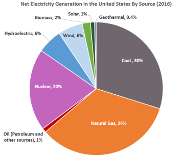

Comparing Nuclear Power to Other Energy Sources
South Carolina relies on a mix of energy sources to power homes and businesses. While solar, natural gas, coal, and hydroelectric energy all contribute, nuclear energy provides several key advantages that make it a cornerstone of the state’s electricity system.

A Balanced Energy Mix
South Carolina benefits from using multiple energy sources. However, nuclear energy stands out because it combines:
- Reliable 24/7 power
- Low operational carbon emissions
- High energy output
- Strong economic support for communities
Together, these strengths make nuclear energy a vital part of South Carolina’s present and future energy strategy.
Explore the rest of the site to learn more about how nuclear power works and where it operates across the state.